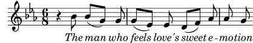

| [ << Modifica dell’output ] | [Top][Contents][Index] | [ Modelli >> ] |
| [ < Proprietà degli oggetti di formattazione ] | [ Up: Manuale del Funzionamento interno ] | [ Tipi di proprietà > ] |
5.2.2 Proprietà presenti nelle interfacce
Supponiamo ora di voler produrre un testo vocale in corsivo. Che tipo di
comando \override ci serve? Consultiamo prima la pagina
della guida al Funzionamento interno che elenca ‘All layout objects’, come
prima, e cerchiamo un oggetto che potrebbe controllare il testo (in inglese
lyrics). Troviamo LyricText, che sembra quello giusto. Clicchiamo
su di esso e troviamo le proprietà del testo. Queste comprendono font-series
e font-size, ma niente che possa dare una forma corsiva. Ciò è dovuto
al fatto che la proprietà della forma è comune a tutti gli oggetti di tipi
di carattere (font). Quindi, invece di includerla in ogni oggetto di
formattazione, viene raggruppata insieme ad altre simili proprietà comuni
e inserita in un’Interfaccia: font-interface.
Ora dobbiamo capire come trovare le proprietà delle interfacce e come scoprire quali oggetti usano queste proprietà.
Torna a vedere la pagina che descrive LyricText. In fondo alla
pagina c’è una lista di interfacce cliccabili supportate da LyricText.
La lista ha molti elementi, incluso font-interface. Cliccando
su di essa arriviamo alle proprietà associate con questa interfaccia, che
sono anche le proprietà di tutti gli oggetti che la supportano, tra cui
LyricText.
Vediamo tutte le proprietà configurabili dall’utente che controllano i
tipi di carattere, compresa font-shape(symbol), dove symbol può
essere impostato su upright, italic o caps.
Puoi notare che lì sono elencate anche font-series e font-size.
Ti potresti chiedere: perché le proprietà comuni dei tipi di carattere
font-series e font-size fanno parte sia dell’oggetto
LyricText sia dell’interfaccia font-interface mentre font-shape
è presente solo nell’interfaccia? Ciò è dovuto al fatto che i valori globali
predefiniti di font-series e font-size cambiano quando viene
creato un oggetto LyricText, mentre i valori di font-shape non
cambiano. Gli elementi in LyricText indicano quali sono i
valori per queste due proprietà che si applicano a LyricText. Altri
oggetti che supportano font-interface imposteranno queste proprietà
in modo diverso quando vengono creati.
Vediamo se ora riusciamo a costruire il comando \override
per rendere il testo corsivo. L’oggetto è LyricText,
la proprietà è font-shape e il valore è
italic. Come in precedenza, ometteremo il contesto.
Per inciso, è importante notare che alcune proprietà prendono come valori
dei simboli, ad esempio italic; in questo caso i valori devono essere
preceduti da un apostrofo, '. I simboli vengono letti internamente da
LilyPond. Nota che sono diversi dalle stringhe di testo arbitrarie, che
appaiono nella forma "una stringa di testo"; maggiori informazioni sui
simboli e le stringhe si trovano in Scheme tutorial.
Quindi il comando \override che rende il testo corsivo è:
\override LyricText.font-shape = #'italic
Deve essere posizionato proprio di fronte al testo che vogliamo modificare, in questo modo:
{ \key es \major \time 6/8 \relative { r4 bes'8 bes[( g]) g | g8[( es]) es d[( f]) as | as8 g } \addlyrics { \override LyricText.font-shape = #'italic The man who | feels love's sweet e -- | mo -- tion } }
e tutto il testo è in corsivo.
Nota: Nel testo bisogna lasciare sempre uno spazio bianco tra l’ultima sillaba e la parentesi graffa che chiude il blocco.
Vedi anche
Estendere: Scheme tutorial.
| [ << Modifica dell’output ] | [Top][Contents][Index] | [ Modelli >> ] |
| [ < Proprietà degli oggetti di formattazione ] | [ Up: Manuale del Funzionamento interno ] | [ Tipi di proprietà > ] |